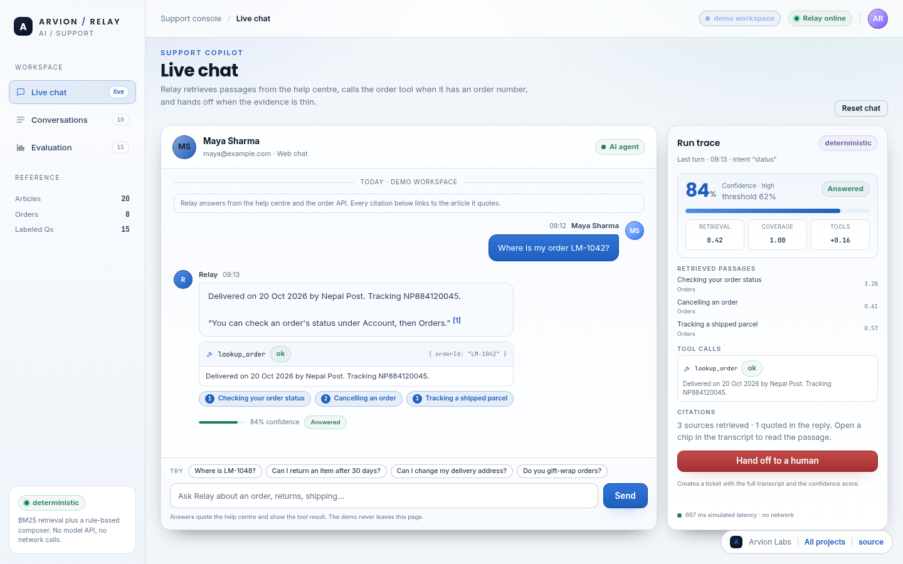

Product sample · AI support
Relay
A support copilot that answers from a 20-article help centre with citations, calls an order-lookup tool, scores its own confidence and hands off to a human when the evidence is thin. No model API: the pipeline is deterministic and evaluated.
20articles
2tools
51tests
15eval set

The problem
AI support that cannot be checked.
A support agent that invents an answer is worse than no agent. The useful question is not “does it sound smart” but “can I see the passage it used, the tool it called, and why it decided to answer rather than escalate”.
Relay makes that trace the interface: every reply carries citations, tool results and a confidence breakdown.
What we built
Retrieval, tools, and an honest threshold.
- BM25 retrieval over the help centre, with the quoted sentence and a citation chip per reply.
- A rule-based planner that calls order lookup or refund eligibility only when the question needs it.
- Confidence from retrieval score, coverage and tool success, with a visible human hand-off that creates a ticket.
- An evaluation tab with labelled questions, hit@k, tool-match, grounding and escalation checks.
Architecture
How it is put together
relay demo
├─ chat: replies, citation chips, tool cards, confidence
├─ admin: conversations, metrics, evaluation
└─ src/: corpus, tokenizer+BM25, composer, tool planner,
confidence model, escalation, eval harness
deterministic pipeline · no network · node:test
Stack
TypeScriptVanilla JS
Security and money
- Answers are extractive quotes, so every sentence is traceable to a retrieved passage.
- Tools are only called when the intent needs live data; the planner and its arguments are logged.
- The threshold trades deflection for correctness and is displayed next to the answer.
- The evaluation set is small and the README says so, the number is not a general accuracy claim.
Screens
Product surfaces
Similar work
Building something in this category?
We can walk you through the architecture, the payment integration and the failure cases on a call, including the parts that were hard.